What You Can Do With Machine Learning
Contents
What You Can Do With Machine Learning#
Computer Vision and Graphics#
Image Classifiers#
The most common machine learning task is to take an image and classify if a single object is in an image
Benchmark Datasets
MNIST - The MNIST database of handwritten digits.
CAL 101 - Caltech-101 consists of pictures of objects belonging to 101 classes, plus one background clutter class. Each image is labelled with a single object. Each class contains roughly 40 to 800 images, totalling around 9k images. Images are of variable sizes, with typical edge lengths of 200-300 pixels. This version contains image-level labels only. The original dataset also contains bounding boxes.
ImageNet -ImageNet is an image database organized according to the WordNet hierarchy (currently only the nouns), in which each node of the hierarchy is depicted by hundreds and thousands of images. The project has been instrumental in advancing computer vision and deep learning research. The data is available for free to researchers for non-commercial use.
CFAR 10 - The CIFAR-10 dataset consists of 60000 32x32 colour images in 10 classes, with 6000 images per class. There are 50000 training images and 10000 test images.
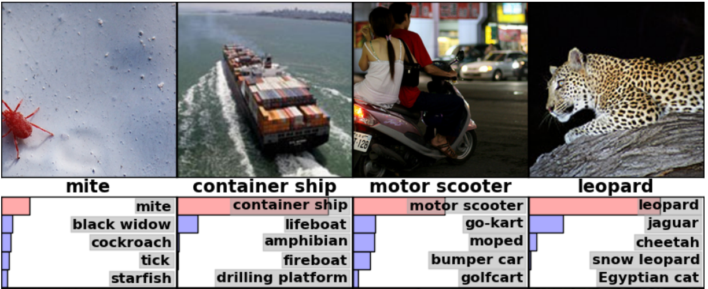
from Alex Krizhevsky, Ilya Sutskever, Geoffrey E. Hinton, ImageNet Classification with Deep Convolutional Neural Networks, NeuroIPS, 2012.
Microsoft (Deep Residual Learning) [Paper][Slide]
Kaiming He, Xiangyu Zhang, Shaoqing Ren, Jian Sun, Deep Residual Learning for Image Recognition, arXiv:1512.03385.
Microsoft (PReLu/Weight Initialization) [Paper]
Kaiming He, Xiangyu Zhang, Shaoqing Ren, Jian Sun, Delving Deep into Rectifiers: Surpassing Human-Level Performance on ImageNet Classification, arXiv:1502.01852.
Batch Normalization [Paper]
Sergey Ioffe, Christian Szegedy, Batch Normalization: Accelerating Deep Network Training by Reducing Internal Covariate Shift, arXiv:1502.03167.
GoogLeNet [Paper]
Christian Szegedy, Wei Liu, Yangqing Jia, Pierre Sermanet, Scott Reed, Dragomir Anguelov, Dumitru Erhan, Vincent Vanhoucke, Andrew Rabinovich, CVPR, 2015.
-
Karen Simonyan and Andrew Zisserman, Very Deep Convolutional Networks for Large-Scale Visual Recognition, ICLR, 2015.
AlexNet [Paper]
Alex Krizhevsky, Ilya Sutskever, Geoffrey E. Hinton, ImageNet Classification with Deep Convolutional Neural Networks, NIPS, 2012.
Classification Model Benchmarks#
Object Detection#
Models that try to find and detect the location of multiple objects in an image
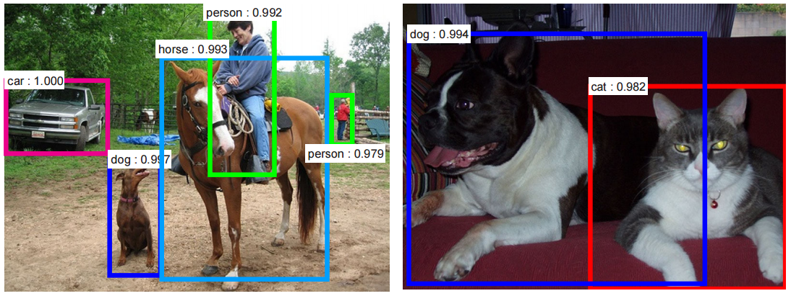
from Shaoqing Ren, Kaiming He, Ross Girshick, Jian Sun, Faster R-CNN: Towards Real-Time Object Detection with Region Proposal Networks, arXiv:1506.01497
Benchmark Datasets
COCO - COCO is a large-scale object detection, segmentation, and captioning dataset.
open_images_v4 - Open Images is a dataset of ~9M images that have been annotated with image-level labels and object bounding boxes.
The training set of V4 contains 14.6M bounding boxes for 600 object classes on 1.74M images, making it the largest existing dataset with object location annotations. The boxes have been largely manually drawn by professional annotators to ensure accuracy and consistency. The images are very diverse and often contain complex scenes with several objects (8.4 per image on average). Moreover, the dataset is annotated with image-level labels spanning thousands of classes.
-
Kye-Hyeon Kim, Sanghoon Hong, Byungseok Roh, Yeongjae Cheon, Minje Park, PVANET: Deep but Lightweight Neural Networks for Real-time Object Detection, arXiv:1608.08021
OverFeat, NYU [Paper]
OverFeat: Integrated Recognition, Localization and Detection using Convolutional Networks, ICLR, 2014.
R-CNN, UC Berkeley [Paper-CVPR14] [Paper-arXiv14]
Ross Girshick, Jeff Donahue, Trevor Darrell, Jitendra Malik, Rich feature hierarchies for accurate object detection and semantic segmentation, CVPR, 2014.
SPP, Microsoft Research [Paper]
Kaiming He, Xiangyu Zhang, Shaoqing Ren, Jian Sun, Spatial Pyramid Pooling in Deep Convolutional Networks for Visual Recognition, ECCV, 2014.
Fast R-CNN, Microsoft Research [Paper]
Ross Girshick, Fast R-CNN, arXiv:1504.08083.
Faster R-CNN, Microsoft Research [Paper]
Shaoqing Ren, Kaiming He, Ross Girshick, Jian Sun, Faster R-CNN: Towards Real-Time Object Detection with Region Proposal Networks, arXiv:1506.01497.
R-CNN minus R, Oxford [Paper]
Karel Lenc, Andrea Vedaldi, R-CNN minus R, arXiv:1506.06981.
End-to-end people detection in crowded scenes [Paper]
Russell Stewart, Mykhaylo Andriluka, End-to-end people detection in crowded scenes, arXiv:1506.04878.
You Only Look Once: Unified, Real-Time Object Detection [Paper], [Paper Version 2], [C Code], [Tensorflow Code]
Joseph Redmon, Santosh Divvala, Ross Girshick, Ali Farhadi, You Only Look Once: Unified, Real-Time Object Detection, arXiv:1506.02640
Joseph Redmon, Ali Farhadi (Version 2)
Inside-Outside Net [Paper]
Sean Bell, C. Lawrence Zitnick, Kavita Bala, Ross Girshick, Inside-Outside Net: Detecting Objects in Context with Skip Pooling and Recurrent Neural Networks
Deep Residual Network (Current State-of-the-Art) [Paper]
Kaiming He, Xiangyu Zhang, Shaoqing Ren, Jian Sun, Deep Residual Learning for Image Recognition
Weakly Supervised Object Localization with Multi-fold Multiple Instance Learning [Paper]
-
Jifeng Dai, Yi Li, Kaiming He, Jian Sun, R-FCN: Object Detection via Region-based Fully Convolutional Networks
-
Wei Liu1, Dragomir Anguelov, Dumitru Erhan, Christian Szegedy, Scott Reed, Cheng-Yang Fu, Alexander C. Berg, SSD: Single Shot MultiBox Detector, arXiv:1512.02325
Speed/accuracy trade-offs for modern convolutional object detectors [Paper]
Jonathan Huang, Vivek Rathod, Chen Sun, Menglong Zhu, Anoop Korattikara, Alireza Fathi, Ian Fischer, Zbigniew Wojna, Yang Song, Sergio Guadarrama, Kevin Murphy, Google Research, arXiv:1611.10012
Semantic Segmentation#
The task of clustering parts of an image together which belong to the same object class. It is a form of pixel-level prediction because each pixel in an image is classified according to a category
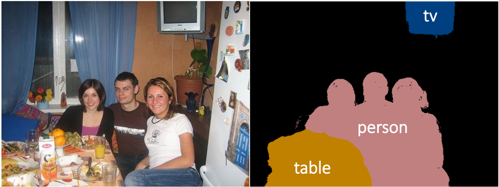
from Jifeng Dai, Kaiming He, Jian Sun, BoxSup: Exploiting Bounding Boxes to Supervise Convolutional Networks for Semantic Segmentation, arXiv:1503.01640.
Benchmark Datasets
PASCAL VOC (PASCAL Visual Object Classes Challenge) - The PASCAL Visual Object Classes (VOC) 2012 dataset contains 20 object categories including vehicles, household, animals, and other: aeroplane, bicycle, boat, bus, car, motorbike, train, bottle, chair, dining table, potted plant, sofa, TV/monitor, bird, cat, cow, dog, horse, sheep, and person. Each image in this dataset has pixel-level segmentation annotations, bounding box annotations, and object class annotations. This dataset has been widely used as a benchmark for object detection, semantic segmentation, and classification tasks. The PASCAL VOC dataset is split into three subsets: 1,464 images for training, 1,449 images for validation and a private testing set.
SEC: Seed, Expand and Constrain
Adelaide
Guosheng Lin, Chunhua Shen, Ian Reid, Anton van dan Hengel, Efficient piecewise training of deep structured models for semantic segmentation, arXiv:1504.01013. [Paper] (1st ranked in VOC2012)
Guosheng Lin, Chunhua Shen, Ian Reid, Anton van den Hengel, Deeply Learning the Messages in Message Passing Inference, arXiv:1508.02108. [Paper] (4th ranked in VOC2012)
Deep Parsing Network (DPN)
Ziwei Liu, Xiaoxiao Li, Ping Luo, Chen Change Loy, Xiaoou Tang, Semantic Image Segmentation via Deep Parsing Network, arXiv:1509.02634 / ICCV 2015 [Paper] (2nd ranked in VOC 2012)
CentraleSuperBoundaries, INRIA [Paper]
Iasonas Kokkinos, Surpassing Humans in Boundary Detection using Deep Learning, arXiv:1411.07386 (4th ranked in VOC 2012)
BoxSup [Paper]
Jifeng Dai, Kaiming He, Jian Sun, BoxSup: Exploiting Bounding Boxes to Supervise Convolutional Networks for Semantic Segmentation, arXiv:1503.01640. (6th ranked in VOC2012)
POSTECH
Hyeonwoo Noh, Seunghoon Hong, Bohyung Han, Learning Deconvolution Network for Semantic Segmentation, arXiv:1505.04366. [Paper] (7th ranked in VOC2012)
Seunghoon Hong, Hyeonwoo Noh, Bohyung Han, Decoupled Deep Neural Network for Semi-supervised Semantic Segmentation, arXiv:1506.04924. [Paper]
Seunghoon Hong,Junhyuk Oh, Bohyung Han, and Honglak Lee, Learning Transferrable Knowledge for Semantic Segmentation with Deep Convolutional Neural Network, arXiv:1512.07928 [Paper] [Project Page]
Conditional Random Fields as Recurrent Neural Networks [Paper]
Shuai Zheng, Sadeep Jayasumana, Bernardino Romera-Paredes, Vibhav Vineet, Zhizhong Su, Dalong Du, Chang Huang, Philip H. S. Torr, Conditional Random Fields as Recurrent Neural Networks, arXiv:1502.03240. (8th ranked in VOC2012)
DeepLab
Liang-Chieh Chen, George Papandreou, Kevin Murphy, Alan L. Yuille, Weakly-and semi-supervised learning of a DCNN for semantic image segmentation, arXiv:1502.02734. [Paper] (9th ranked in VOC2012)
Zoom-out [Paper]
Mohammadreza Mostajabi, Payman Yadollahpour, Gregory Shakhnarovich, Feedforward Semantic Segmentation With Zoom-Out Features, CVPR, 2015
Joint Calibration [Paper]
Holger Caesar, Jasper Uijlings, Vittorio Ferrari, Joint Calibration for Semantic Segmentation, arXiv:1507.01581.
Fully Convolutional Networks for Semantic Segmentation [Paper-CVPR15] [Paper-arXiv15]
Jonathan Long, Evan Shelhamer, Trevor Darrell, Fully Convolutional Networks for Semantic Segmentation, CVPR, 2015.
Hypercolumn [Paper]
Bharath Hariharan, Pablo Arbelaez, Ross Girshick, Jitendra Malik, Hypercolumns for Object Segmentation and Fine-Grained Localization, CVPR, 2015.
Deep Hierarchical Parsing
Abhishek Sharma, Oncel Tuzel, David W. Jacobs, Deep Hierarchical Parsing for Semantic Segmentation, CVPR, 2015. [Paper]
Learning Hierarchical Features for Scene Labeling [Paper-ICML12] [Paper-PAMI13]
Clement Farabet, Camille Couprie, Laurent Najman, Yann LeCun, Scene Parsing with Multiscale Feature Learning, Purity Trees, and Optimal Covers, ICML, 2012.
Clement Farabet, Camille Couprie, Laurent Najman, Yann LeCun, Learning Hierarchical Features for Scene Labeling, PAMI, 2013.
University of Cambridge [Web]
Vijay Badrinarayanan, Alex Kendall and Roberto Cipolla “SegNet: A Deep Convolutional Encoder-Decoder Architecture for Image Segmentation.” arXiv preprint arXiv:1511.00561, 2015. [Paper]
Alex Kendall, Vijay Badrinarayanan and Roberto Cipolla “Bayesian SegNet: Model Uncertainty in Deep Convolutional Encoder-Decoder Architectures for Scene Understanding.” arXiv preprint arXiv:1511.02680, 2015. [Paper]
Princeton
Fisher Yu, Vladlen Koltun, “Multi-Scale Context Aggregation by Dilated Convolutions”, ICLR 2016, [Paper]
Univ. of Washington, Allen AI
Hamid Izadinia, Fereshteh Sadeghi, Santosh Kumar Divvala, Yejin Choi, Ali Farhadi, “Segment-Phrase Table for Semantic Segmentation, Visual Entailment and Paraphrasing”, ICCV, 2015, [Paper]
INRIA
Iasonas Kokkinos, “Pusing the Boundaries of Boundary Detection Using deep Learning”, ICLR 2016, [Paper]
UCSB
Niloufar Pourian, S. Karthikeyan, and B.S. Manjunath, “Weakly supervised graph based semantic segmentation by learning communities of image-parts”, ICCV, 2015, [Paper]
Edge Detection#
Taking an image and identifying the edges
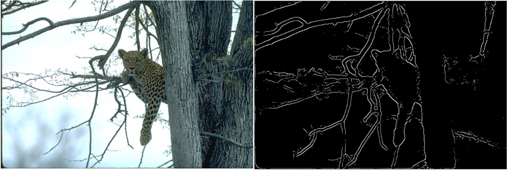
from Gedas Bertasius, Jianbo Shi, Lorenzo Torresani, DeepEdge: A Multi-Scale Bifurcated Deep Network for Top-Down Contour Detection, CVPR, 2015.
Benchmark Datasets
The multi-cue boundary detection dataset - We collected two sets of hand-annotations for the last video frame of the left image for every scene: one for object boundaries, and one for “lower-level” edges. Hand-segmentation was performed by paid undergraduate students at Brown University (Providence, RI). We wrote custom custom Java software to enable manual annotations within a web browser. Annotators were not limited in the amount of time they had available to complete the task. The segmentation involved annotating contours that defined the boundary of each object’s visible surface regions. We gave all annotators the same basic instructions as done in Martin, Fowlkes, and Malik (2004): “You will be presented a photographic image. Divide the image into some number of segments, where the segments represent things or parts of things in the scene. The number of segments is up to you, as it depends on the image. Something between 2 and 30 is likely to be appropriate. It is important that all of the segments have approximately equal importance.”
Holistically-Nested Edge Detection [Paper] [Code]
Saining Xie, Zhuowen Tu, Holistically-Nested Edge Detection, arXiv:1504.06375.
DeepEdge [Paper]
Gedas Bertasius, Jianbo Shi, Lorenzo Torresani, DeepEdge: A Multi-Scale Bifurcated Deep Network for Top-Down Contour Detection, CVPR, 2015.
DeepContour [Paper]
Wei Shen, Xinggang Wang, Yan Wang, Xiang Bai, Zhijiang Zhang, DeepContour: A Deep Convolutional Feature Learned by Positive-Sharing Loss for Contour Detection, CVPR, 2015.
Colorization#
Taking an image, or strokes of color and converting it into a colored image
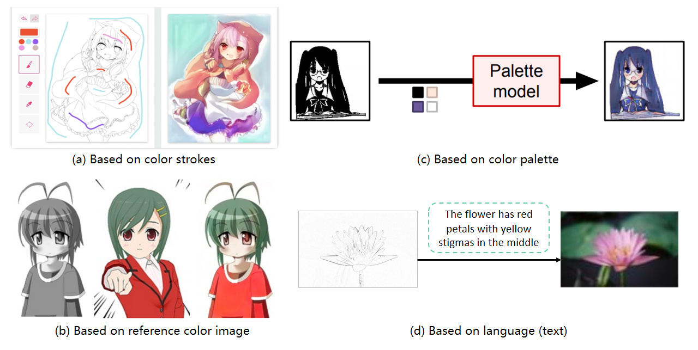
More Information
Super resolution#
Taking a low quality image and enhancing its resolution
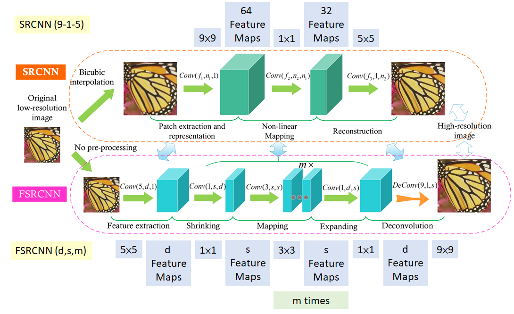
[DLT16]
Benchmark Datasets
BSD (Berkeley Segmentation Dataset) - BSD is a dataset used frequently for image denoising and super-resolution. Of the subdatasets, BSD100 is aclassical image dataset having 100 test images proposed by Martin et al.. The dataset is composed of a large variety of images ranging from natural images to object-specific such as plants, people, food etc. BSD100 is the testing set of the Berkeley segmentation dataset BSD300.
Image and Video Denoising#
Techniques to remove noise from images and videos
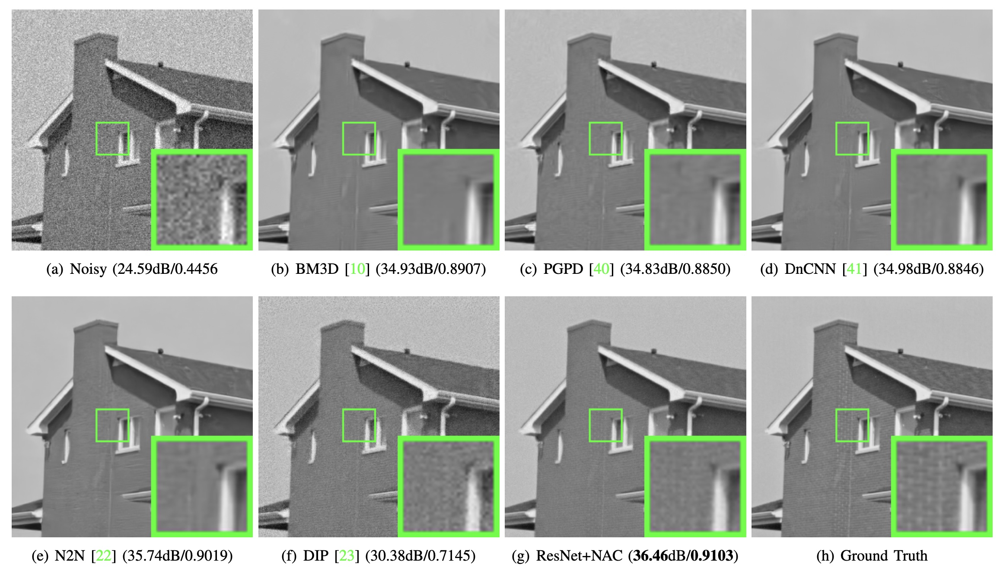
[XHC+20]
Benchmark Datasets
The Darmstadt Noise Dataset - Lacking realistic ground truth data, image denoising techniques are traditionally evaluated on images corrupted by synthesized i. i. d. Gaussian noise. This is quite problematic, since noise in real photographs is not i. i. d. Gaussian and even seemingly minor details of the synthetic noise process, such as whether the noisy values are rounded to integers, can have a significant effect on the relative performance of methods.
Hence, we present a novel denoising benchmark, the Darmstadt Noise Dataset (DND). It consists of 50 pairs of real noisy images and corresponding ground truth images that were captured with consumer grade cameras of differing sensor sizes. For each pair, a reference image is taken with the base ISO level while the noisy image is taken with higher ISO and appropriately adjusted exposure time. The reference image undergoes a careful post-processing entailing small camera shift adjustment, linear intensity scaling and removal of low-frequency bias. The post-processed image serves as ground truth for our denoising benchmark.
More Information
Optical flows#
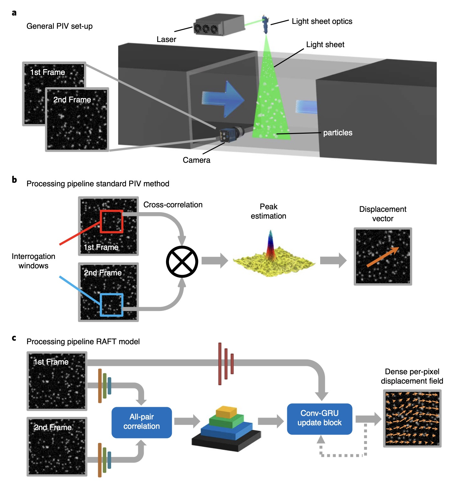
Benchmark Datasets
Virtual KITTI -Virtual KITTI is a photo-realistic synthetic video dataset designed to learn and evaluate computer vision models for several video understanding tasks: object detection and multi-object tracking, scene-level and instance-level semantic segmentation, optical flow, and depth estimation.
Virtual KITTI contains 50 high-resolution monocular videos (21,260 frames) generated from five different virtual worlds in urban settings under different imaging and weather conditions. These worlds were created using the Unity game engine and a novel real-to-virtual cloning method. These photo-realistic synthetic videos are automatically, exactly, and fully annotated for 2D and 3D multi-object tracking and at the pixel level with category, instance, flow, and depth labels
Human Pose Estimation#
Predicting the pose of a human in an image
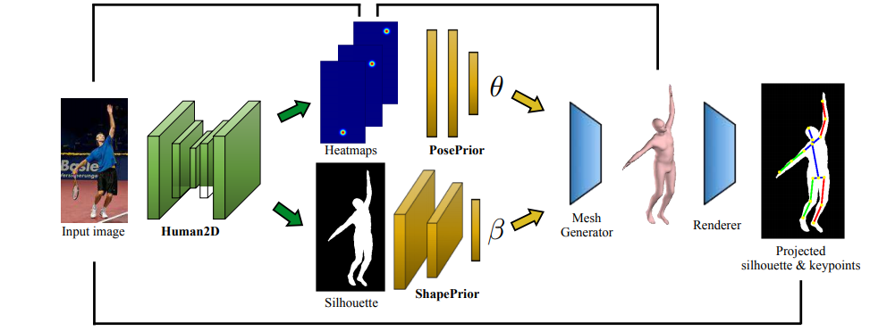
Benchmark Datasets
MPII Human Pose Dataset - MPII Human Pose dataset is a state of the art benchmark for evaluation of articulated human pose estimation. The dataset includes around 25K images containing over 40K people with annotated body joints. The images were systematically collected using an established taxonomy of every day human activities. Overall the dataset covers 410 human activities and each image is provided with an activity label. Each image was extracted from a YouTube video and provided with preceding and following un-annotated frames. In addition, for the test set we obtained richer annotations including body part occlusions and 3D torso and head orientations.
Following the best practices for the performance evaluation benchmarks in the literature we withhold the test annotations to prevent overfitting and tuning on the test set. We are working on an automatic evaluation server and performance analysis tools based on rich test set annotations.
Simple Pose: Rethinking and Improving a Bottom-up Approach for Multi-Person Pose Estimation -[CODE] - Jia Li, Wen Su, Zengfu Wang (AAAI2020)
An End-to-End Framework for Unsupervised Pose Estimation of Occluded Pedestrians - Sudip Das, Perla Sai Raj Kishore, Ujjwal Bhattacharya (Arxiv 2020)
Transferring Dense Pose to Proximal Animal Classes - [CODE] - Artsiom Sanakoyeu, Vasil Khalidov, Maureen S. McCarthy, Andrea Vedaldi, Natalia Neverova (CVPR 2020)
Peeking into occluded joints: A novel framework for crowd pose estimation - ingteng Qiu, Xuanye Zhang, Yanran Li, Guanbin Li, Xiaojun Wu, Zixiang Xiong, Xiaoguang Han, Shuguang Cui (Arxiv 2020)
Motion-supervised Co-Part Segmentation - Aliaksandr Siarohin*, Subhankar Roy*, Stéphane Lathuilière, Sergey Tulyakov, Elisa Ricci, Nicu Sebe (Arxiv 2020)
Detailed 2D-3D Joint Representation for Human-Object Interaction - [CODE] - Yong-Lu Li, Xinpeng Liu, Han Lu, Shiyi Wang, Junqi Liu, Jiefeng Li, Cewu Lu (CVPR 2020)
Distribution Aware Coordinate Representation for Human Pose Estimation - [CODE] - Feng Zhang, Xiatian Zhu, Hanbin Dai, Mao Ye, Ce Zhu (CVPR 2020)
Yoga-82: A New Dataset for Fine-grained Classification of Human Poses - [Data] - Manisha Verma, Sudhakar Kumawat, Yuta Nakashima, Shanmuganathan Raman (CVPRW 2020)
Self-supervised Keypoint Correspondences for Multi-Person Pose Estimation and Tracking in Videos - Rafi Umer, Andreas Doering, Bastian Leibe, Juergen Gall (Arxiv 2020)
Making DensePose fast and light (Arxiv 2020)
Differentiable Hierarchical Graph Grouping for Multi-Person Pose Estimation - Sheng Jin, Wentao Liu, Enze Xie, Wenhai Wang, Chen Qian, Wanli Ouyang, Ping Luo (ECCV 2020)
Whole-Body Human Pose Estimation in the Wild - [Data] - Sheng Jin, Lumin Xu, Jin Xu, Can Wang, Wentao Liu, Chen Qian, Wanli Ouyang, Ping Luo (ECCV 2020)
6D Object Pose Estimation#
Models to determine the location and orientation of objects from an image important for robotics
[IKL+22]
Benchmark Datasets
ICCV2015 Occluded Object Challenge - The purpose of this challenge is to compare different methods for object pose estimation in a realistic setting featuring heavy occlusion. Our dataset includes eight objects in a cluttered scene. Given a RGB-D image the method has to estimate the position and orientation (a total of six degrees of freedom) of each object. You can participate by applying your method to our data and submitting your results. We will evaluate submitted results according to multiple metrics and display the scores for comparison.
Natural Language Processing#
a subfield of linguistics, computer science, and artificial intelligence concerned with the interactions between computers and human language, in particular how to program computers to process and analyze large amounts of natural language data. The goal is a computer capable of “understanding” the contents of documents, including the contextual nuances of the language within them.
Source Wikipedia
Extracting Knowledge from Text Corpus#
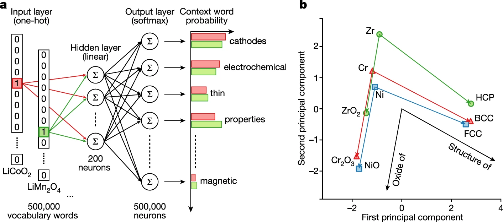
[TDW+19]
Benchmark Datasets
GLUE (General Language Understanding Evaluation benchmark) - General Language Understanding Evaluation (GLUE) benchmark is a collection of nine natural language understanding tasks, including single-sentence tasks CoLA and SST-2, similarity and paraphrasing tasks MRPC, STS-B and QQP, and natural language inference tasks MNLI, QNLI, RTE and WNLI.
SQuAD (Stanford Question Answering Dataset) - The Stanford Question Answering Dataset (SQuAD) is a collection of question-answer pairs derived from Wikipedia articles. In SQuAD, the correct answers of questions can be any sequence of tokens in the given text. Because the questions and answers are produced by humans through crowdsourcing, it is more diverse than some other question-answering datasets. SQuAD 1.1 contains 107,785 question-answer pairs on 536 articles. SQuAD2.0 (open-domain SQuAD, SQuAD-Open), the latest version, combines the 100,000 questions in SQuAD1.1 with over 50,000 un-answerable questions written adversarially by crowdworkers in forms that are similar to the answerable ones.
SST (Stanford Sentiment Treebank) - The Stanford Sentiment Treebank is a corpus with fully labeled parse trees that allows for a complete analysis of the compositional effects of sentiment in language. The corpus is based on the dataset introduced by Pang and Lee (2005) and consists of 11,855 single sentences extracted from movie reviews. It was parsed with the Stanford parser and includes a total of 215,154 unique phrases from those parse trees, each annotated by 3 human judges.
Each phrase is labelled as either negative, somewhat negative, neutral, somewhat positive or positive. The corpus with all 5 labels is referred to as SST-5 or SST fine-grained. Binary classification experiments on full sentences (negative or somewhat negative vs somewhat positive or positive with neutral sentences discarded) refer to the dataset as SST-2 or SST binary.
Speech Recognition#
Learning context representations and information from audio files
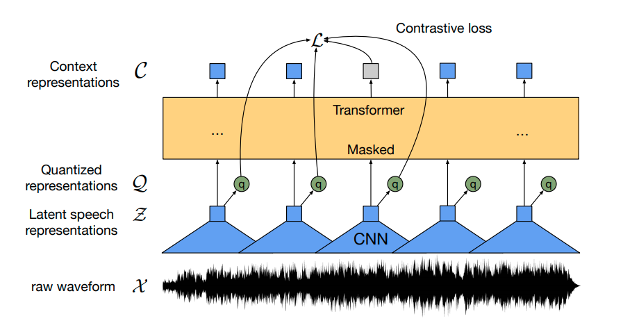
Benchmark Datasets
LibriSpeech - The LibriSpeech corpus is a collection of approximately 1,000 hours of audiobooks that are a part of the LibriVox project. Most of the audiobooks come from the Project Gutenberg. The training data is split into 3 partitions of 100hr, 360hr, and 500hr sets while the dev and test data are split into the ’clean’ and ’other’ categories, respectively, depending upon how well or challening Automatic Speech Recognition systems would perform against. Each of the dev and test sets is around 5hr in audio length. This corpus also provides the n-gram language models and the corresponding texts excerpted from the Project Gutenberg books, which contain 803M tokens and 977K unique words.
AudioSet - Audioset is an audio event dataset, which consists of over 2M human-annotated 10-second video clips. These clips are collected from YouTube, therefore many of which are in poor-quality and contain multiple sound-sources. A hierarchical ontology of 632 event classes is employed to annotate these data, which means that the same sound could be annotated as different labels. For example, the sound of barking is annotated as Animal, Pets, and Dog. All the videos are split into Evaluation/Balanced-Train/Unbalanced-Train set.
Generative Models#
Generative models generate new examples from a distribution

In deep learning these models are called Generative Adversarial Networks (GANs) \(\rightarrow\) there are a ton of cool applications
Generating Anime Characters#
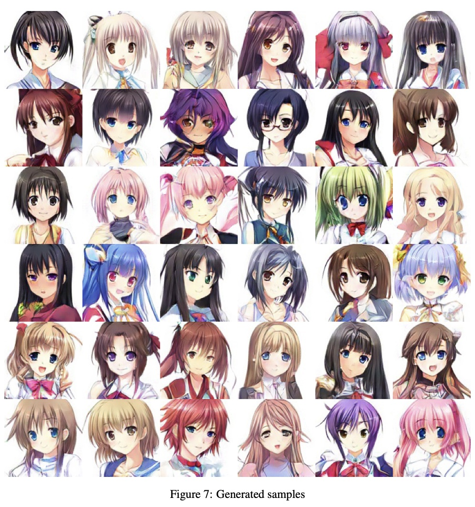
[JZL+17]
Generating Images from Text#
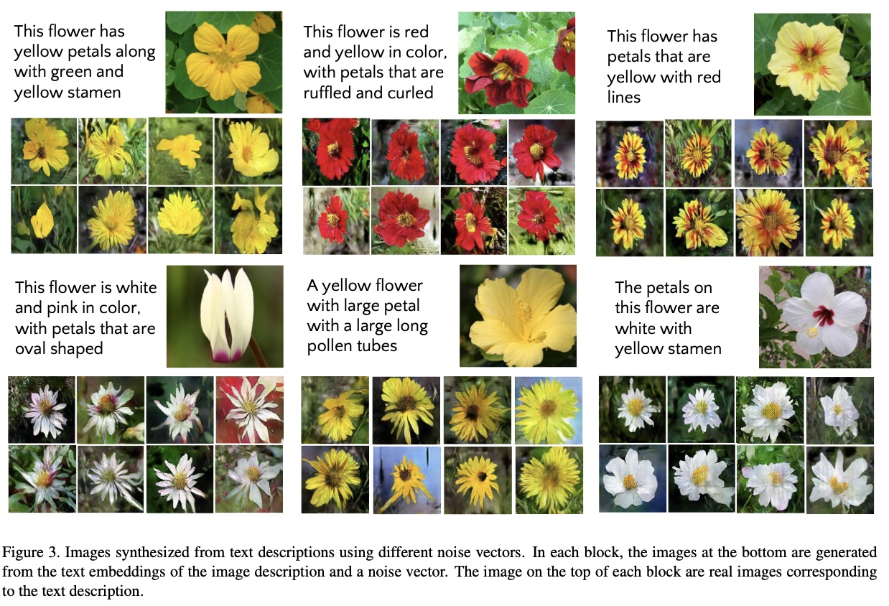
[DGA+17]
from IPython.display import IFrame
IFrame('http://gaugan.org/gaugan2/', width=2200, height=1200)
Image-to-Image Translation#

[ZPIE17]
DeepFakes#
Synthetic media where a person is replaced by the likeness (image and voice of another person)
from IPython.display import HTML
HTML('<iframe width="602" height="339" src="https://www.youtube.com/embed/cQ54GDm1eL0" title="You Won’t Believe What Obama Says In This Video! 😉" frameborder="0" allow="accelerometer; autoplay; clipboard-write; encrypted-media; gyroscope; picture-in-picture" allowfullscreen></iframe>')
/opt/homebrew/Caskroom/miniforge/base/envs/jupyterbook/lib/python3.10/site-packages/IPython/core/display.py:419: UserWarning: Consider using IPython.display.IFrame instead
warnings.warn("Consider using IPython.display.IFrame instead")
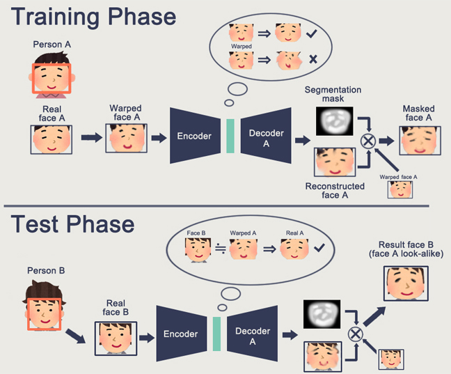
Physics Informed and Physics Constrained Machine Learning#
Physics-Informed Neural Networks (PINNs)#
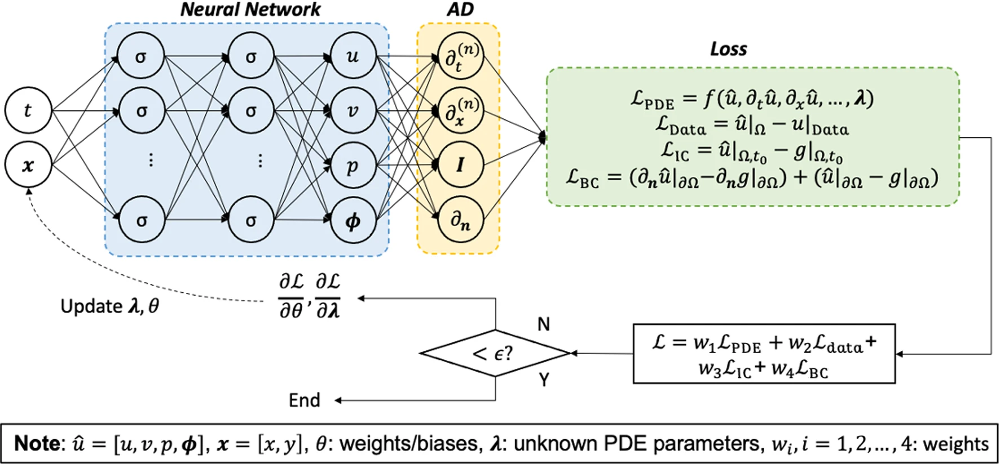
[CMW+22]
Accelerated Fitting Using Physics-Constrained Neural Networks#
As long as the empirical functions are differentiable you can train a model to predict the parameters using the empirical function as a decoder.
Model Architecture#
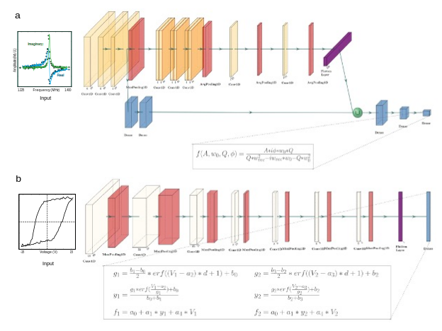
Fit Results#
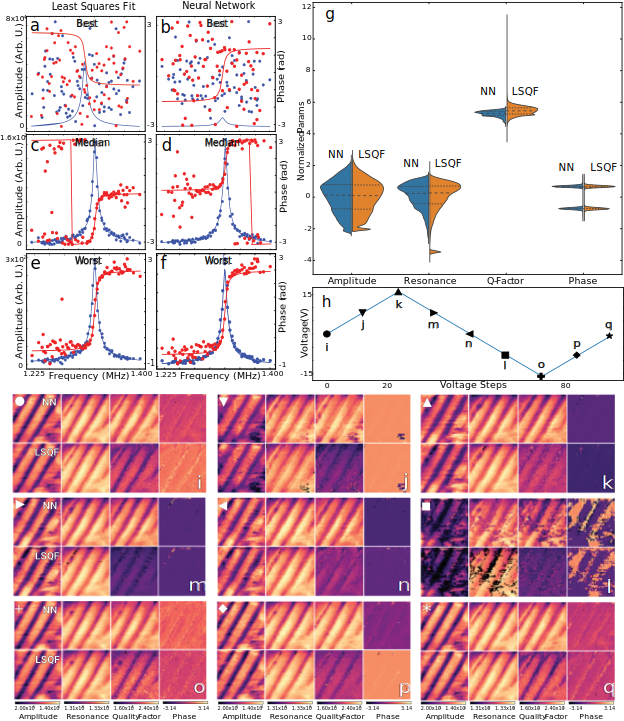
Learning Underlying Governing Equations#
There are ways to take raw data and candidate functions and learn underlying governing equations using sparse identification
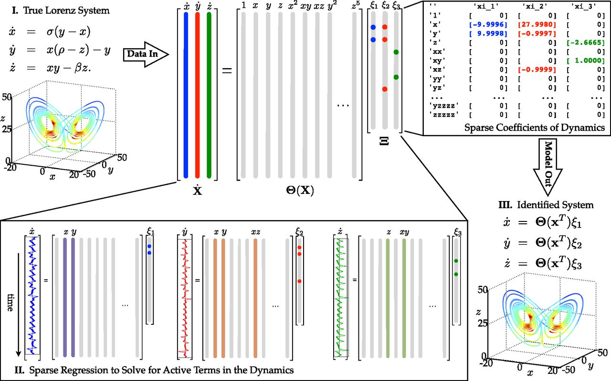
[BPK16]
Reinforcement Learning#
Playing Mario#
from IPython.display import HTML
HTML('<iframe width="560" height="315" src="https://www.youtube.com/embed/qv6UVOQ0F44" title="YouTube video player" frameborder="0" allow="accelerometer; autoplay; clipboard-write; encrypted-media; gyroscope; picture-in-picture" allowfullscreen></iframe>')
Much More Complex Games#
from IPython.display import HTML
HTML('<iframe width="560" height="315" src="https://www.youtube.com/embed/UuhECwm31dM" title="YouTube video player" frameborder="0" allow="accelerometer; autoplay; clipboard-write; encrypted-media; gyroscope; picture-in-picture" allowfullscreen></iframe>')
Physical Object Manipulation or Fine Motor Skills#
from IPython.display import HTML
HTML('<iframe width="1268" height="713" src="https://www.youtube.com/embed/x4O8pojMF0w" title="Solving Rubik’s Cube with a Robot Hand" frameborder="0" allow="accelerometer; autoplay; clipboard-write; encrypted-media; gyroscope; picture-in-picture" allowfullscreen></iframe>')
Take Away Messages:#
Data analysis and machine learning can be used in a variety of complex tasks
There are a variety of different implementations and methods for in machine learning
We have only just scratched the surface in how machine learning can be applied, this is a very exciting time
In this class we will prepare you to be a machine learning practitioner, and use machine learning for applications in science and manufacturing
Machine learning is a rapidly growing field. You could take a full course in each of these areas
References#
- BPK16
Steven L Brunton, Joshua L Proctor, and J Nathan Kutz. Discovering governing equations from data by sparse identification of nonlinear dynamical systems. Proceedings of the National Academy of Sciences, 113(15):3932–3937, 2016.
- CMW+22
Shengze Cai, Zhiping Mao, Zhicheng Wang, Minglang Yin, and George Em Karniadakis. Physics-informed neural networks (PINNs) for fluid mechanics: a review. Acta Mech. Sin., January 2022.
- DGA+17
Ayushman Dash, John Cristian Borges Gamboa, Sheraz Ahmed, Marcus Liwicki, and Muhammad Zeshan Afzal. TAC-GAN - text conditioned auxiliary classifier generative adversarial network. arXiv, March 2017. arXiv:1703.06412.
- DLT16
Chao Dong, Chen Change Loy, and Xiaoou Tang. Accelerating the Super-Resolution convolutional neural network. Computer Vision and Pattern Recognition, August 2016. arXiv:1608.00367.
- IKL+22
Muhammad Zubair Irshad, Thomas Kollar, Michael Laskey, Kevin Stone, and Zsolt Kira. CenterSnap: Single-Shot Multi-Object 3D shape reconstruction and categorical 6D pose and size estimation. 2022.
- JZL+17
missing journal in Jin2017-gy
- LLMSchroder21
Christian Lagemann, Kai Lagemann, Sach Mukherjee, and Wolfgang Schröder. Deep recurrent optical flow learning for particle image velocimetry data. Nature Machine Intelligence, 3(7):641–651, July 2021.
- TDW+19
Vahe Tshitoyan, John Dagdelen, Leigh Weston, Alexander Dunn, Ziqin Rong, Olga Kononova, Kristin A Persson, Gerbrand Ceder, and Anubhav Jain. Unsupervised word embeddings capture latent knowledge from materials science literature. Nature, 571(7763):95–98, July 2019.
- XHC+20
Jun Xu, Yuan Huang, Ming-Ming Cheng, Li Liu, Fan Zhu, Zhou Xu, and Ling Shao. Noisy-As-Clean: learning self-supervised denoising from corrupted image. IEEE Trans. Image Process., September 2020.
- ZPIE17
Jun-Yan Zhu, Taesung Park, Phillip Isola, and Alexei A Efros. Unpaired image-to-image translation using cycle-consistent adversarial networks. In Proceedings of the IEEE International Conference on Computer Vision, 2223–2232. openaccess.thecvf.com, 2017.
- BaevskiZhouMohamedothers
missing year in Baevski_undated-gm